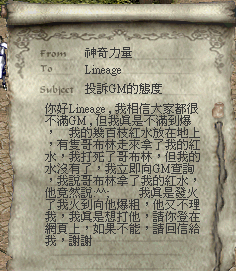
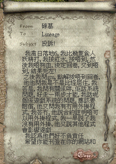

|
2002年9月1日
天堂常見Bug及解決方法
鳴謝玩家神奇力量及碌葛提供他們中Bug的經過：

首先第一個常見Bug是被怪物拾了道具後，假如太快將其殺死，那麼它們所拾的道具便會不翼而飛。這個問題的原因是因為天堂的伺服器是分散式設計，控制怪物的NPC伺服器及主伺服器是分開的，且兩者是有少許的延遲時間。因此在怪物拾取道具後，那道具便會在主伺服器消失，但未必能夠即到傳送往NPC伺服器，假如你太快將怪物殺死的話，那麼NPC上便會沒有那個道具，而道具亦會消失了。（簡單來說這是天堂的主伺服器及NPC伺服器未能同步化(Synchronize)而產生的問題）如果大家想取回道具的話，便要等怪物拾了道具後約2秒才將其殺死，那麼道具便有足夠時間傳送往NPC伺服器，而大家亦可在怪物上取回道具。

第二個Bug是熱鍵間中會失誤，大約可以分為兩種。第一種是常見的，大多數是在多次傳送後，便不能使用熱鍵，解決方法是多行一步便可。而第二種是非常嚴重的，就是突然間所有熱鍵會失效（俗稱死Hotkey，而人物仍然可以交談，並不是Lag的問題），無論你多行多少步也不能解決問題，即使在道具欄上雙擊任何道具亦不會有反應，簡單來說就是不能使用任何道具。由於不能使用藥水和回卷的關係，假如在這時被怪物打的話幾乎是一定會死的，尤其是在被物屈在牆旁。解決方法只有重登，或將天堂程序強行中斷，或用另一部電腦登入相同帳號以踢走角色 =.=
追加資料：鳴謝玩家LASU提供資料，假如在說話欄有任何字或指標，那麼便不能使用F10的熱鍵，而其他熱鍵則仍然可以使用。
不過有點失望是GM對以上兩種常見Bug的認識及支援幾乎是零，及將責任推在玩家使用外掛上。 |